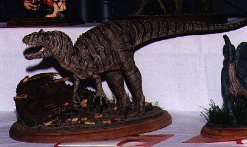
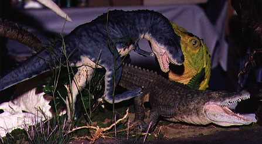
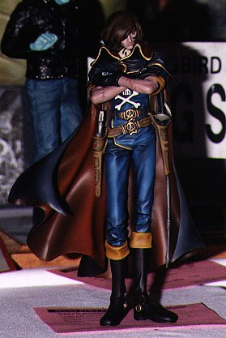
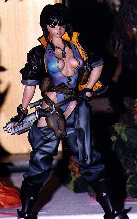
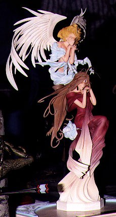
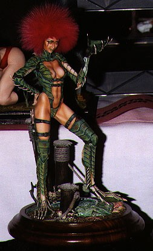
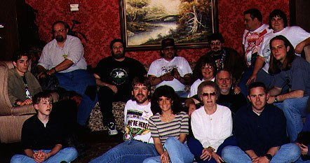

Review by:
Kevin O'Connell (lumraptr@indy.net)
 nce
again John Weber, Kay Engstrom and I found ourselves on a
minivacation to Lousiville Ky, to attend Wonderfest 97. We arrived late
Thursday and checked in. Even on Thursday, we saw some other GK fans
milling about, including guest of honor Dave Cockrum.
nce
again John Weber, Kay Engstrom and I found ourselves on a
minivacation to Lousiville Ky, to attend Wonderfest 97. We arrived late
Thursday and checked in. Even on Thursday, we saw some other GK fans
milling about, including guest of honor Dave Cockrum.
We got up early Friday and went to see The Falls of the Ohio State Park just on the Indiana side of the river. It's a 5 minute drive just off I-65 in Jeffersonville IN. The FOTOhio features a large fossil bed that juts out into the Ohio river. There is a beautiful new visitor center that has a very impressive, large Diorama in the front foyer. It features the history of the area in one fell swoop. A Mastodon skeleton, a school of prehistoric fish, a Bison, an early native American, a medieval Welsh explorer (see the display to learn of the legend.) and frontiersman. They had an award winning introductory film that I really wanted the soundtrack to or a copy of the film, but the gift shop had neither. Most of the actual fossil beds were underwater due the spring floods, but I was actually able to go down and see some of them. Too bad fossil collecting was prohibited. Please go see it, you would never know this area of the country had so much history!
Friday evening we began catching up with many Grems. So I don't leave anybody out, I'm just not going to mention names. You all know who you were! It was pleasure to meet you all! We all went to each other's rooms to gawk at the models before they went into the contest. It became almost funny as we were trying to organize dinner, someone new would show up and we'd say, "ya wanna see the kits?" and off we would go!
I paid for the early bird pass this year again. It did not net me any kits, but it gave me peace of mind that I did not loose out on any rare kits I was looking for. Most of the kits I bought after the main doors had opened.
I was disappointed that there were not more anime character kits of main characters at good prices. I saw some recasts that were selling for more than the originals and recasts of kits I knew were still in production. Puff-n-Stuff was the only dealer that was selling legitimate kits, though I did buy an old Lark Luffy from Musashi Enterprise which also was selling licensed lead miniatures of the fleet from Space Cruiser Yamato. I spent the rest of the con turning my attention to western themed kits. No deals here either. CM Studios had some wonderful dinosaur kits, none under $100. As I kept touring the dealer's room. hoping to make a "discovery," I frequently ran into other Grems! This is what I was looking forward to most at WF. Putting a face on all the great people I had talked to online! I saw many GITGarage t-shirts!
Around noon, I went up stairs and got my kits for the contest. This con has the best security for entries, and I actually felt better when they were on display in the contest rather than in the hotel room. Ya never know what could happen to them in a nice, secluded hotel room while you are gone...
I did not attend any panels this year. I'm sorry I did not get to see Bob Burns Halloween films again, but I was having so much fun schmoozing with people that I did not want to miss an opportunity to meet people and cut deals. ( I've got more to learn about cutting deals... I'm pretty lousy at it.) I spent some time trying to track down Osamu Kishikawa, an editor from Japan whom I met last year.
Saturday evening, a large party of grems went to Damons for dinner. It was chaos trying to get all those people together. Damons food seemed unremarkable, but it did not matter, as the company more than made up for it. We all returned to the hotel and watched videos of the Daicon Films, Wonderfestival (Japan) 90, and the infamous Professional Modelers Championship in Japan featuring David Fisher as one of the contestants. Because there was no English, Ed Bowkely and Rock-n-Roll Kirby provided their own dialog giving birth to the "Fisherboy" event. I was just glad that Osamu Kishikawa, who was down the hall, did not accept my invitation to attend. He speaks some English and might have gotten the wrong impression...
I returned to my room after videos and found that we had guests. Three anime modelers from Dayton Ohio, and Ken Convey. They had all their modeling supplies with them and were working on kits! My other room mates were there as well, having a very animated conversation with them. We stayed up till close to 2:30 in the morning talking kits! It was a lot of fun guys, let's do it next year!
Sunday was judgment day. The model contest results. I used this time to photograph kits I liked. Forgive me if your kits is not seen here. I chose pics of kits that A: I did not think would be in the gallery B: Survived my poor photography skills. My vote for the best kit of the show goes to the Nina Dilono on the rotating platform! I don't know if it won any awards, but it deserved a gold! Just as the ceremonies for awards began, I finally found Osamu Kishikawa when he had some time to talk! I probably wasn't going to win anything, so off I went. I sat down at the pool with a Osamu and friend (I wish I knew his name.) and talked for about a half hour about projects he's working on and swapping addresses. I got back to the award ceremonies, only to learn I had won a silver award for my Daicon Bunny Girl! Boy, I was embarrassed. This sort of happened to me last year that I missed a chance to be in the spotlight. I was just shocked to get such an award!
The last event was the banquet. We enjoyed a nice dinner and watched presentation by Chris Walas and William Stout. I was disappointed that most of the Grems had not stayed for this event. During a break, Chinxy showed me his great treasure trove of old Aurora build-ups he bought for a song. He was just wondering how the heck he was going to get them home on a plane! We searched the hotel for packing peanuts and found none. He eventually wrapped them in his clothes. A report indicated that they mostly survived the trip.
What else is there to say? We left the hotel Monday with longings that we could experience the con one more day! Our bank accounts were glad we didn't. Next year, I hope some Grems might show up earlier Friday and stay till Monday so we can share all our experiences in a more relaxed time-line. See ya next year!
|  |
| Allosaurus by Joe Nieberger |
|  |
| Diorama at CM Studios table, reputed to have been painted by Tommy Ellis |
|  |
| Captain Harlock by Heavy Gauge |
|  |
| Mokoto Kusanagi by Alpha |
|  |
| Holly Bell |
|  |
| This paint job was awesome. Who built it? |
|  |
| Many of the Grems I met at the show. Where were the rest of you guys? |
The Gremlins in the Garage webzine is a production of Firefly Design. If you have any questions or comments please get in touch.
Copyright © 1994-1997 Firefly Design.